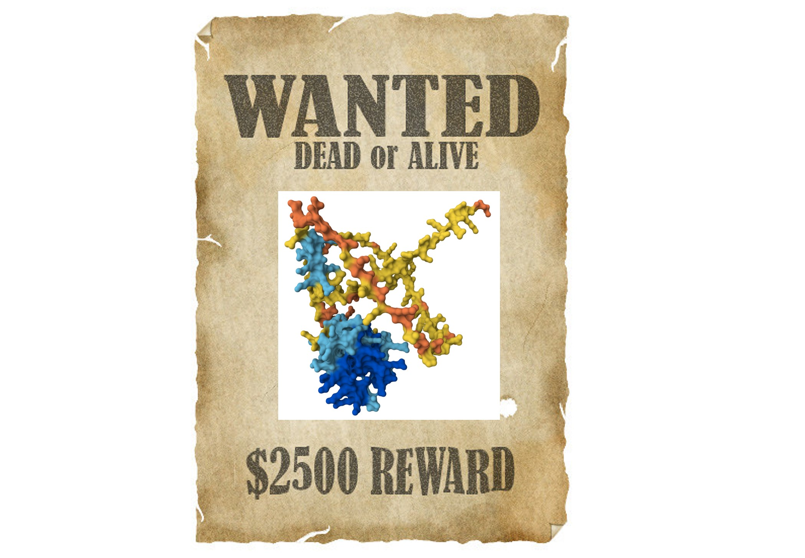

This post is part 3 in a series on using AI to predict T cell binding. Here are part 1 and part 2.
Better understanding what T cells bind to is a crucial question; some researchers even call it “a holy grail of systems immunology”. While AI is already being used towards solutions, there is still much work to be done in this area!
In part 1 of this series, we discussed the importance of determining what a T cell, that multi-purpose hero of the adaptive immune system, can bind to. New research papers on this topic are published each month. Almost all of them use neural networks, and in part 2, we discussed different types of neural networks. Now we will see how different types of neural networks are being applied to T cell binding.
When T Cell Binding Makes a Big Difference
T cells play a role in autoimmune diseases like Type 1 diabetes (where T cells mistakenly destroy insulin-producing cells in the pancreas) and psoriasis (where T cells attack our own skin). T cells are also crucial to a healthy response to cancer. In cancer, something has gone amiss: cells undergo uncontrolled growth. T cells should put a stop to this, but in many cases T cells have been misleadingly soothed into exhaustion.
An increasing number of cancer therapies are based on T cells, and predicting which T cells are the most promising cancer-fighting candidates is crucial. When all is in harmony, our T cells should keep cancer from starting in the first place by quickly identifying and killing any cells which have gone rogue. T cells do this by recognizing small pieces of protein, called peptides, held out to them on special molecules called MHC. If those proteins are the sign of a good cell gone bad, the T cell can destroy the miscreant cell.
We can help the immune system by hanging up WANTED posters with the faces of outlaw proteins on them. This can let the immune system know who to look out for.

In practice, this is done by pairing a cancer peptide (called a “neoantigen”) together with a danger signal, and injecting them into a patient in order to sound the alarm and spur T cells into action. We need to identify which rogue cancer proteins are the most promising candidates for such a therapy. Neural networks are being used for this task!
One key question is which peptides are the best candidates to use in these therapies. A key criteria is that T cells need to be able to recognize the peptide, which means that MHC molecules need to be able to bind to it. Everyone has different T cells and MHC molecules, since these are created by the most diverse genes in the human genome! The answer must be personalized.
Applying Neural Networks
This seems like a question where neural networks could be helpful. In part 2, we discussed several different architectures (sequences of math operations) that we could choose between. One consideration is whether the input to a problem is fixed length or variable length. Are we identifying pictures of dogs, or reading Anna Karenina? The problem of T cell binding can be (and is!) framed both ways, depending on the team and the approach they choose to take. In general, sequences of amino acids can have a huge variety of lengths. However, T cell receptors and the peptides held out by MHC have lengths within a narrow range. As a result, we could use neural net architectures that have developed for fixed length problems. Or we could take advantage of the engineering and large training sets that already went into creating neural networks for variable length proteins. Strong research is being published of both types, and I am curious to see if there will be a consensus 5 years from now on the best approach.
To Use AlphaFold or Not?
As discussed in part 1, the computer program AlphaFold made headlines in 2020 for its incredible accuracy in taking a 1D sequence of amino acids as input and producing a 3D protein structure as output. It won an international competition for this task by a huge margin, smashing all previous records. Since T cell receptors (TCRs), MHC molecules, and peptides are all proteins, it makes sense that we could modify it for the T cell problem.

AlphaFold (and similar models, such as RosettaFold and ESMFold) are excellent at what they do, which is to take a sequence of amino acids and predict the 3D structure of a protein. However, it is possible that these models are simultaneously both overkill and underkill for our T cell question. AlphaFold can handle much longer amino acid sequences than are found in the T cell binding problem, yet it doesn’t account for T cells having not just one, but a pair of TWO sequences of amino acids (known as the alpha and beta chains). AlphaFold was trained on a massive data set, yet that dataset did not include much in the way of T cell or MHC specific data. Some researchers have chosen to modify AlphaFold, adding additional layers for prediction, or fine-tuning on a more relevant dataset, whereas other teams have chosen to design neural networks that are more directly suited to the task at hand.
Which approach is better? It’s tough to tell. Reading papers within the field can be confusing, as many boast of great results. Since there is an absence of consistent benchmarks and models are often not evaluated for accuracy on new peptides, it can be tough to compare different models.
The Need for a Grand Challenge
You may wonder why we can’t clearly see which neural network for T cell binding is definitively the best. The ImageNet competition produced a clear winner for recognizing objects in images in 2012: AlexNet, a neural net that was head and shoulders better than the other entries. Similarly, AlphaFold dominated the CASP competition in 2020. However, several factors are necessary to create competitions such as ImageNet or CASP, and these factors do not yet exist for the T cell problem.
You need a large, well-curated, and representative dataset. This can fail in numerous ways. While data is central to any machine learning project, all too often, data work has been undervalued and neglected. The paper “Everyone wants to do the model work, not the data work” drew on interviews with 53 machine learning practitioners across multiple countries. Building fancy math models is rewarded with career advancement, not the arduous labor of collecting and curating the underlying datasets that make those models possible. In many cases, those tasked with collecting data had it piled on top of already demanding jobs, with inadequate communication, training, or compensation. This led to erroneous measurements, miscommunications, and failed projects. To give one example, when machines in a robotic medical AI project were recalibrated, the change was not documented, leading to inconsistent data that was impossible to interpret.
Data work is particularly challenging in the area of T cell receptors (TCRs). Current datasets cover just a tiny fraction of all possible TCRs. It is difficult to scale experimental methods, so less than 1 million unique TCR-peptide pairs have been found experimentally. Of the data that exists, the vast majority just contains one of the two amino acid sequences which make up a TCR, even though both sequences are significant.
You also need everyone to agree on what numerical metrics to use in evaluating success, and for those metrics to closely correspond to the value you care about. Great harm can result when those metrics are a poor proxy for the underlying goal. Providing a meaningful numeric score and declaring a winner require the right setup and a lot of effort behind the scenes.
Some researchers have called for a “grand challenge” of inferring T cell receptor binding, similar to the grand challenge in prediction protein folding which led to AlphaFold. Standardizing datasets and setting clear metrics for comparisons could motivate innovation. This is a high-impact area within immunology and medicine and I hope that it is a continued focus of research!
This post is part 3 in a series on using AI to predict T cell binding. Here are part 1 and part 2.
Thank you to Jeremy Howard for feedback on an earlier draft of this post.
You can subscribe to be notified of new blog posts by submitting your email below:
I look forward to reading your responses. Create a free GitHub account to comment below.